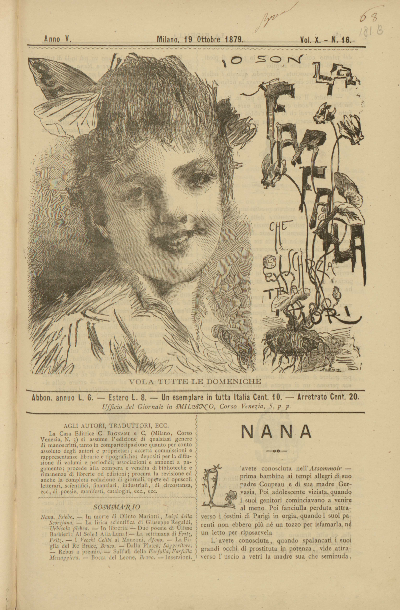
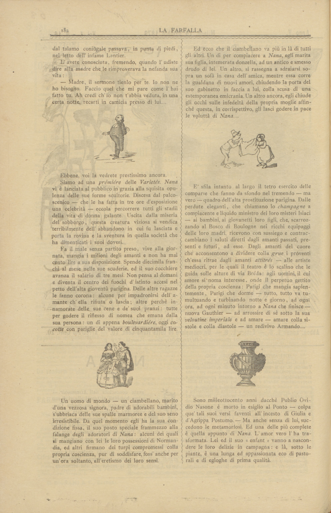
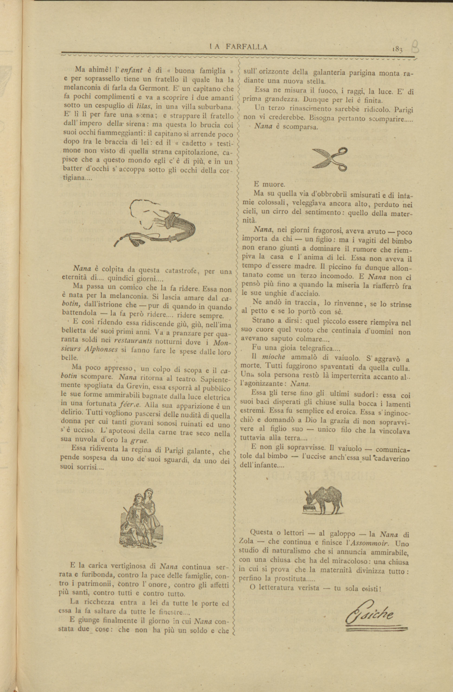

Codifica a cura di Francesca D'Apolito
COVerLeSS è un ambiente web integrato e open access, interamente dedicato alla ricezione contemporanea della letteratura del Verismo italiano. La forte impronta storico-sociale che ha caratterizzato le grandi opere e i testi fondativi di questo movimento (dalle novelle di Vita dei campi ai Malavoglia, dalle novelle Rusticane al Mastro-don Gesualdo, dal romanzo Giacinta di Capuana alle prime novelle di De Roberto), si è riflessa in un ricchissimo pullulare di recensioni, polemiche letterarie, saggi, interventi di tipo teorico, riflessioni in chiave militante.
Fondata a Cagliari da Angelo Sommaruga, con cadenza quindicinale, «La Farfalla» vide la luce il 27 febbraio 1876. Si presentava al pubblico «semplice, pulita, senza fregi e senza fronzoli», quasi del tutto priva di quelle novità grafiche che caratterizzeranno le riviste successive. I maggiori collaboratori furono, oltre Giarelli, autore della maggior parte degli articoli, Ottone Bacaredda, Felice Cameroni, Paolo Valera, Ferdinando Fontana, Cesario Testa, Domenico Milelli, Remigio Zena. Nel 1877 Sommaruga ritornò a Milano, portando con sé la rivista. Il primo numero milanese del 30 settembre uscì con una nuova testata che preannunciava lo stile liberty: un disegno di Tranquillo Cremona che raffigurava una graziosa fanciulla incastonato tra le prime due lettere del titolo.
Si è scelto di codificare il testo mantenendo la corrispondenza esatta delle righe dell'edizione a stampa attraverso il tag lb.
Si è scelto di mantenere la sillabazione delle parole per il ritorno a capo. I ritorni a capo che spezzano una parola sono stati marcati con l'attributo break="no" (per indicare l'unità logica della parola) e rend="-" (per documentare la presenza del trattino tipografico a stampa).
Si è scelto di mantenere la spaziatura originale.
Si è scelto di creare una tassonomia in textClass con i principali temi del Verismo riconosciuti nei testi codificati. All'interno del testo, sono state marcate parole e frasi esemplificative di questi temi, ricondotte alle categorie corrispondenti attraverso l'uso del tag ref.
Il testo, intitolato "Nana" e firmato "Psiche", presenta una sintesi ed un commento critico al romanzo "Nanà" di Émile Zola. L'autore analizza il personaggio della protagonista dell'opera, appunto Nanà, ripercorrendo la sua storia sin dalla sua infanzia vissuta nei bassifondi e nel degrado morale, raccontata nel romanzo "L'Assommoir". L'autore racconta del suo tentativo di riscatto, quando recita al Théâtre des Variétés di Parigi, e delle storie con i suoi amanti finite in tragedia. Infine, narra della nascita e della morte prematura per vaiuolo del figlio Louiset, così come la morte di Nanà, che si ammala anch'essa nel tentativo eroico di assistere il figlio. Il testo elogia il romanzo come un'ammirabile prodotto del Naturalismo, evidenziando come la maternità sia in grado di divinizzare chiunque, perfino una prostituta.
L'avete conosciuta nell'Assommoir -
prima bambina ai tempi allegri di suo
padre Coupeau e di sua madre Ger-
vasia.
Poi adolescente viziata, quando
i suoi genitori cominciavano a venire
al meno. Poi fanciulla perduta attra-
verso i festini di Parigi in orgia, quando i suoi pa-
renti non ebbero più nè un tozzo per isfamarla, nè
un letto per riposarvela.
L'avete conosciuta, quando spalancati i suoi
grandi occhi di prostituta in potenza, vide attra-
verso l'uscio a vetri la madre sua che seminuda,
L'avete conosciuta, fremendo, quando l'udiste
dire alla madre che le rimproverava la nefanda sua
vita:
- Madre, il sermone tienlo per te. Io non ne
ho bisogno. Faccio quel che mi pare come l'hai
fatto tu. Ah credi ch'io non t'abbia veduta, in una
certa notte, recarti in camicia presso di lui....
Ebbene, voi la vedrete prestissimo ancora.
Siamo ad una prémiére della Varietés. Nana
vi è lanciata al pubblico in grazia alla squisita opu-
lenza delle sue forme scultorie. Discesa dal palco-
scenico - che le ha fatta in tre ore d'esposizione
una celebrità - eccola percorrere tutti gli stadii
della vita di donna galante. Uscita dalla miseria
del sobborgo, questa creatura viziosa si vendica
terribilmente dell'abbandono in cui fu lasciata e
porta la rovina e la sventura in quella società che
ha dimenticati i suoi doveri.
Fa il male senza partito preso, vive alla gior-
nata, mangia i milioni degli amanti e non ha mai
cento lire a sua disposizione. Spende diecimila fran-
chi al mese nelle sue scuderie, ed il suo cocchiere
avanza il salario di tre mesi. Non pensa al domani
e diventa il centro dei fuochi d'istinto accesi nel
petto dell'alta gioventù parigina. Delle altre ragazze
le fanno corona: alcune per impadronirsi dell'a-
mante ch'ella rifiuta o lascia; altre perchè in-
namorate delle sue cene de' suoi pranzi: tutte
per godere il riflesso di nomea che emana dalla
sua persona: un dì appena boulevardiére, oggi co-
cotte con pariglie del valore di cinquantamila lire.
Un uomo di mondo - un ciambellano, marito
d'una vezzosa signora, padre di adorabili bambini,
s'ubbriaca delle sue spalle marmoree e del suo seno
irresistibile. Da quel momento egli ha la sua con-
dizione fissa, il suo posto speciale frammezzo alla
falange degli adoratori di Nana: alcuni dei quali
si mangiano con lei le loro possessioni di Norman-
dia, ed altri firmano dei turpi compromessi colla
propria coscienza, pur di soddisfare, foss'anche per
un'ora soltanto, all'eretismo dei loro sensi.
Ed ecco che il ciambellano va più in là di tutti
gli altri. Un dì per compiacere a Nana, egli marita
sua figlia, intemerata donzella, ad un antico e smesso
drudo di lei. Un altro, si rassegna a sdraiarsi so-
pra un sofà in casa dell'amica, mentre essa corre
la gualdana di nuovi amori, chiudendo la porta del
suo gabinetto in faccia a lui, colla scusa di una
estemporanea emicrania. Un altro ancora, egli chiude
gli occhi sulle infedeltà della propria moglie affin
chè questa, in corrispettivo, gli lasci godere in pace
le voluttà di Nana....
E sfila intanto al largo il tetro esercito delle
comparse che fanno da sfondo nel tremendo - ma
vero - quadro dell'alta prostituzione parigina. Dalle
perdute eleganti, che chiamano lo champagne a
compiacente e liquido ministro dei loro misteri Isiaci
- ai bambini, ai giovanetti loro figli, che, scaroz-
zando al Bosco di Boulogne nei ricchi equipaggi
delle loro madri, ricevono con sussiego e contrac-
cambiano i saluti diretti dagli amanti passati, pre-
senti e futuri, ad esse. Dagli amanti del cuore
che acconsentono a dividere colla grue i proventi
ch'essa ritrae dagli amanti attitrés - alle artiste
mediocri, per le quali il teatro è lo scalino che le
guida sulle alture di via Bréda: agli uomini, il cui
amore si noma interesse, onde il perpetuo gettito
della propria coscienza: Parigi che mangia sapien-
temente, Parigi che dorme - tutto, tutto va tu-
multuando e turbinando notte e giorno, ad ogni
ora, ad ogni minuto intorno a Nana che finisce -
nuova Gauthier - ad arrossire di sè sotto la sua
veloutine imperiale e ad amare - amare colla si-
stole e colla diastole - un redivivo Armando....
Sono milleottocento anni dacchè Publio Ovi-
dio Nasone
è morto in esiglio al Ponto - colpa
que' tali suoi versi faventi all'incesto di Giulia e
d'Agrippa Postumo. - Ma anche senza di lui, suc-
cedono le metamorfosi. Ed una delle più complete
è quella appunto di Nana. L'amor vero l'ha tra-
sformata. Lei ed il suo « enfant » vanno a nascon-
dere le loro delizie in campagna: e là, sotto le
piante, è una lunga ed appassionata eco di pasto-
rali e di egloghe di prima qualità.
Ma ahimè! l' enfant è di « buona famiglia »
e per soprassello tiene un fratello il quale ha la
melanconia di farla da Germont. E' un capitano che
fa pochi complimenti e va a scoprire i due amanti
sotto un cespuglio di lilas, in una villa suburbana.
E' lì lì per fare una scena; e strappare il fratello
dall'impero della sirena: ma questa lo brucia coi
suoi occhi fiammeggianti: il capitano si arrende poco
dopo tra le braccia di lei: ed il « cadetto » testi-
mone non visto di quella strana capitolazione, ca-
pisce che a questo mondo egli c'è di più, e in un
batter d'occhi s'accoppa sotto gli occhi della cor-
tigiana....
Nana è colpita da questa catastrofe, per una
eternità di.... quindici giorni....
Ma passa un comico che la fa ridere. Essa non
è nata per la melanconia. Si lascia amare dal ca-
botin, dall'istirone che - pur di quando in quando
battendola - la fa però ridere.... ridere sempre.
E così ridendo essa ridiscende giù, giù, nell'ima
belletta de' suoi primi anni. Va a pranzare per qua-
ranta soldi nei restaurants notturno dove i Mon-
sieurs Alphonsens si fanno fare le spese dalle loro
belle.
Ma poco appresso, un colpo di scopa e il ca-
botin scompare. Nana ritorna al teatro. Sapiente-
mente spogliata da Grevin, essa esporrà al pubblico
le sue forme ammirabili bagnate dalla luce elettrica
in una fortunata féerie. Alla sua apparizione è un
delirio. Tutti vogliono pascersi delle nudità di quella
donna per cui tanti giovani sonosi ruinati ed uno
s'è ucciso. L'apoteosi della carne trae seco nella
sua nuvola d'oro la grue.
Essa ridiventa la regina di Parigi galante, che
pende sospesa da uno de' suoi sguardi, da uno dei
suoi sorrisi....
E la carica vertiginosa di Nana continua ser-
rata e furibonda, contro la pace delle famiglie, con-
tro i patrimonii, contro l'onore, contro gli affetti
più santi, contro tutti e contro tutto.
La ricchezza entra a lei da tutte le porte ed
essa la fa saltare da tutte le finestre....
E giunge finalmente il giorno in cui Nana con-
stata due cose: che non ha più un soldo e che
Essa ne misura il fuoco, i raggi, la luce. E' di
prima grandezza. Dunque per lei è finita.
Un terzo rinascimento sarebbe ridicolo. Parigi
non vi crederebbe. Bisogna pertanto scomparire.....
Nana è scomparsa.
E muore.
Ma su quella via d'obbrobbrii smisurati e di infa-
mie colossali, veleggiava ancora alto, perduto nei
cieli, un cirro del sentimento: quello della mater-
nità.
Nana, nei giorni fragorosi, aveva avuto - poco
importa da chi - un figlio: ma i vagiti del bimbo
non erano giunti a dominare il rumore che riem-
piva la casa e l'anima di lei. Essa non aveva il
tempo d'essere madre. Il piccino fu dunque allon-
tanato come un terzo incomodo. E Nana non ci
pensò più fino a quando la miseria la riafferrò fra
le sue unghie d'acciaio.
Ne andò in traccia, lo rinvenne, se lo strinse
al petto e se lo portò con sè.
Strano a dirsi: quel piccolo essere riempiva nel
suo cuore quel vuoto che centinaia d'uomini non
avevano saputo colmare....
Fu una gioia telegrafica....
Il mioche ammalò di vaiuolo. S'aggravò a
morte. Tutti fuggirono spaventati da quella culla.
Una sola persona restò là imperterrita accanto al-
l'agonizzante: Nana.
Essa gli terse fino gli ultimi sudori: essa coi
suoi baci disperati gli chiuse sulla bocca i lamenti
estremi. Essa fu semplice ed eroica. Essa s'inginoc-
chiò e domandò a Dio la grazie di non sopravvi-
vere al figlio suo - unico filo che la vincolava
tuttavia alla terra....
E non gli sopravvisse. Il vaiuolo - comunica-
tole dal bimbo - l'uccise anch'essa sul cadaverino
dell'infante....
Questa o lettori - al galoppo - la Nana di
Zola - che continua e finisce l'Assommoir. Uno
studio di naturalismo che si annuncia ammirabile,
con una chiusa che ha del miracoloso: una chiusa
in cui si prova che la maternità divinizza tutto:
perfino la prostituta.....
O letteratura verista - tu sola esisti!


